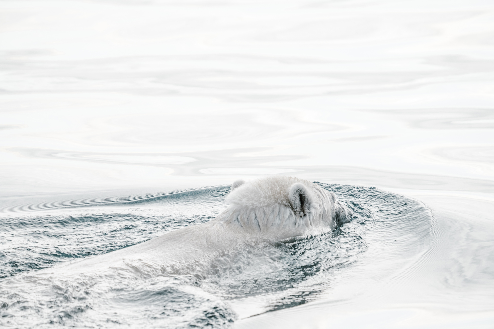

Donate
Donate
Polar Bears are a hypercarnivorous bear whose native range lies largely within the Arctic Circle, encompassing the Arctic Ocean, its surrounding seas and surrounding land masses. Although most polar bears are born on land, they spend most of their time on the sea ice. Polar bears hunt their preferred food of seals from the edge of sea ice, often living off fat reserves when no sea ice is present. Because of expected habitat loss caused by climate change, the polar bear is classified as a vulnerable species, and at least three of the nineteen polar bear subpopulations are currently in decline.
